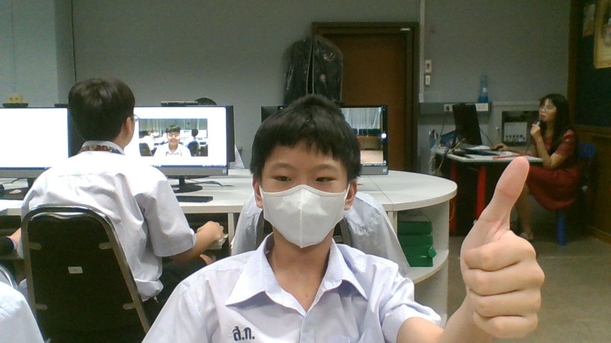

นายสิงหา สุวรรณศรี : ขอบคุณมากๆครับครูทำให้ผมเข้าใจตัวเองมากขึ้น
บทเพลงที่มอบให้ครู

นายอังกิณัญญ์ เป็ดสุวรรณ : ครูสอนพระพุทธดีมาก

นายเอกวิตย์ วาระโก : ครูสอนพระพุทธดีมาก

นายธีรยุทธ มาณะจักร : teer

นายสถาพร อุทธา : ลายมือครูโครตสุดยอด(ประชด)

จัดทำโดย : เด็กชายณัฏฐกิตติฺ์ ดาวทองประเสริฐ ชั้น 211 เลขที่ 8